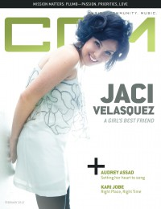

Jaci Velásquez
|  |
| February 2012 CCM Digital |
 |
| 15 April 2017 CCM Digital |
Media coverage:
- Jun 1996 in CCM "Faces to Watch: Sixteen Candles", by Linda Pfrommer
- Jul 1996 in Campus Life "Opening Acts: Pop With A Punch!", by Chris Lutes
- Jan 1998 in CCM "In Concert: Mechanicsville Christian Center, Richmond, VA", by Melissa Ruggieri
- Mar 1998 in Campus Life "Hanging Out with Jaci V.", by Chris Lutes
- Jun 1998 in CCM "Golden Girl", by Jim Long
- Dec 1998 in CCM "In Concert: El Cajon, CA", by Dean Nelson
- Oct 1999 in CCM "On The Beat: Latin Fever", by Trisha Hubbs
- Dec 1999 in CCM Brasil "O que Rola: Febre Latina", by Trisha Hubbs
- Jul 2000 in Campus Life "Our Heroes: Jaci Velásquez"
- Sep 2000 in CCM "The Woman In Me", by Gregory J Rumburg
- Nov 2000 in Campus Life "What God Is Teaching Me: Jaci Velásquez", by Martin Cockroft
- Nov 2000 in CCM "In Concert: North Central College, Naperville, IL", by Andy Argyrakis
- May 2001 in Today's Christian Woman "5 Minutes With: Jaci Velásquez"
- Oct 2001 in CCM "All Access: Latin Music Poised For Growth", by Beau Black
- Sep 2002 in Christian Music Planet "Two: Jaci Velasquez", by Deanna Broxton
- Apr 2003 in CCM "Crazy! Sexy? Christian.", by Matthew Turner
- Jun 2003 in Campus Life "The Real Me", by Mark Moring
- Sep 2003 in CCM "Insider: On The Fly: Artist's Non-Musical Hobbies", by Christina Farris
- Mar 2004 in Campus Life "The Good Life", by Andree Farias
- Aug 2004 in CCM "5 Questions With: Jaci Velásquez"
- Aug 2004 in CCM "List-O-Rama: 5 Christian Artists on the Big Screen", by Chris Well
- Sep 2004 in CCM "List-O-Rama: 5 Examples of the Secret Connection between Christian Music and Game Shows", by Chris Well
- Dec 2004 in CCM "'x' Things You Probably Didn't Know About...: Jaci Velásquez"
- May 2005 in CCM "Insider: A'postrophe Marks the Spot", by Andrea Bailey Willits
- Jun 2005 in CCM "Escuchas musica Christiana en Espanol?", by Andree Farias
- Jun 2005 in CCM "Beyond Spanglish"
- Jul 2010 in CCM Digital "What's New: Jaci Velásquez", by Andy Argyrakis
- Dec 2011 in CCM Digital "Mission Matters: After all these years, artists are still honoring the call", by Grace S. Aspinwall, Caroline Lusk
- Jan 2012 in CCM Digital "Musicians Corner: In the Studio: Jaci Velásquez"
- Feb 2012 in Christianity Today "Two Minutes With...: Jaci Velásquez"
- Feb 2012 in CCM Digital "A Girl's Best Friend", by Caroline Lusk
- 15 Apr 2017 in CCM Digital "Mountains Into Molehills", by Andrew Greer
Albums & reviews:
1996: Heavenly Place
2000: Crystal Clear
2003: Unspoken
2004: Mi Historia Musical
2005: Beauty Has Grace
2007: Open House
2008: Love Out Loud
- Jun 1996 in Charisma, by Mark A Smeby
- Jul 1996 in Today's Christian Woman
- Aug 1996 in CCM, by Laura Harris
- Nov 1996 in YouthWorker, by Mike D Matzinger
- Jun 1998 in Aspire
- Jun 1998 in CCM, by Dave Urbanski
- Jul 1998 in Charisma, by John M De Marco
- Sep 1998 in YouthWorker, by Heather Noce
- Sep 1998 in Today's Christian Woman
- Sep 1998 in CCM Brasil, by Dave Urbanski
- Feb 1999 in Church Musician Today, by Shannon Dietor-Hartley
2000: Crystal Clear
- Sep 2000 in Campus Life, by Martin Cockroft
- Sep 2000 in YouthWorker, by Dave Urbanski
- Sep 2000 in CCM, by Dave Urbanski
- Feb 2001 in Profile, by Chris Well
- Aug 2001 in CBA Marketplace, by Bianca Elliot
- Nov 2001 in YouthWorker, by Dave Urbanski
- Nov 2001 in CCM, by Dave Urbanski
- Dec 2003 in CCM, by Christina Farris
2003: Unspoken
- Mar 2003 in Christian Music Planet, by Steve Gannon
- Apr 2003 in CCM, by Lizza Connor
- May 2003 in YouthWorker, by Dave Urbanski
2004: Mi Historia Musical
2005: Beauty Has Grace
- May 2005 in YouthWorker, by Dave Urbanski
- Jun 2005 in CCM, by Lou Carlozo
- 14 Jun 2005 in Christian Century, by Lou Carlozo
2007: Open House
2008: Love Out Loud
- Mar 2008 in CCM, by Grace C. Cartwright
- May 2008 in Today's Christian Woman
- May 2008 in Worship Leader
- Feb 2012 in CCM Digital, by Matt Conner
- 1 Apr 2017 in CCM Digital, by Andy Argyrakis
- 1 Apr 2017 in CCM Digital, by Andy Argyrakis
- May 2017 in Worship Leader, by Gary Durbin
Award Summary (Nominations / Wins)
Dove Awards- 1997 Dove Awards
- Female Vocalist
- Pop/Contemporary Album: Heavenly Place
- New Artist
- Inspirational Recorded Song: "On My Knees"
- Female Vocalist
- Female Vocalist
- Artist
- Pop/Contemporary Recorded Song: "God So Loved"
- Female Vocalist
- Spanish Language Album: Liegar A Ti
- Female Vocalist
- Pop/Contemporary Album: Crystal Clear
- Artist
- Inspirational Recorded Song: "Adore"
- Spanish Language Album: Mi Corazón
- Spanish Language Album: Navidad
- Inspirational Recorded Song: "Jesus Is"
- Inspirational Recorded Song: "Lay It Down"
- Spanish Language Album: Confío
- 1999 Grammy Awards
- Best Latin Pop Performance: Liegar A Ti
- Best Pop/Contemporary Gospel Album: Crystal Clear
- 1996 Billboard Music Video Awards
- Best New Artist Clip, Contemporary Christian: "Un Lugar Celestial"
- Best Clip, Contemporary Christian: "God So Loved"
- Best Clip, Contemporary Christian: "Adore"
- Best Latin Clip: "Como Se Cura Una Herida"
Books about Jaci Velásquez
- "The Road" in Soul2Soul (Christopher L Coppernoll, 1998)
- "Life Is A Dance" in Soul2Soul (Christopher L Coppernoll, 1998)
- "Jaci Velásquez" in The Encyclopedia of Contemporary Christian Music (Mark Allan Powell, 2002)
- "Testimonies: Interviews With Christian Artists" in The Billboard Guide to Contemporary Christian Music (Barry Alfonso, 2002)
- "Jaci Velásquez" in The Billboard Guide to Contemporary Christian Music (Barry Alfonso, 2002)
Published articles:
© 2011 CMnexus. Last updated April 2021. Contact: editor -AT- cmnexus -DØT- org About